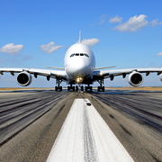
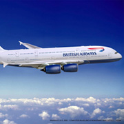
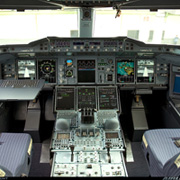
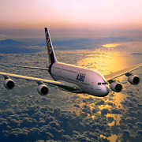
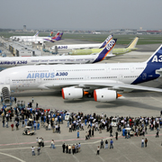
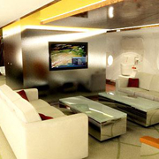
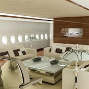

De Airbus A380 is het grootste passagiersvliegtuig ter wereld. Het is een product van het Europese concern Airbus. Het widebody-vliegtuig beschikt over twee verdiepingen, waardoor het maximaal 853 passagiers kan herbergen. Bij een gemiddelde configuratie passen er 555 personen in. De eerste testvlucht werd gemaakt op 27 april 2005. Tweeënhalf jaar later, op 25 oktober 2007, maakte de A380 haar eerste commerciële vlucht. In dienst van Singapore Airlines vloog de A380 van Singapore naar Sydney. Dit was eveneens de eerste route waarop een lijndienst door het toestel werd onderhouden. Anno april 2011 hebben vijf luchtvaartmaatschappijen 47 vliegtuigen van dit type in dienst.








